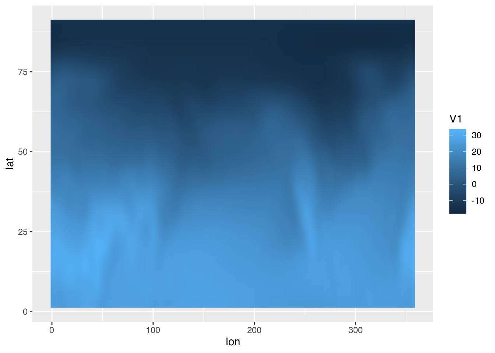

Why I love data.table
I’ve been an R user for a few years now and the data.table package has been my staple package for most of it. In this post I wanted to talk about why almost every script and RMarkdown report I write start with:
library(data.table)My memory issues
I started working on my licenciate thesis (the argentinian equivalent to a Masters Degree) around mid 2016. I had been using R for school work and fun for some time and knew that I wanted to perform all my analysis in R and write my thesis in RMarkdown. In the end, I did but in the process I had to learn new tools and also create my own (which materialised in the metR package).
The big problem I encountered early on was how to store and manipulate data. My main source of data were the output of atmospheric models which are stored usually in regularly spaced grids. The most natural way to store that kind of data would be in a multidimensional array like this:
file <- "~/DATOS/NCEP Reanalysis/air.mon.mean.nc"
subset <- list(level = 1000:800,
time = c("1979-01-01", "2018-12-01"))
temperature <- metR::ReadNetCDF(file,
subset = subset,
out = "array")[[1]]
str(temperature)## num [1:144, 1:73, 1:3, 1:473] -30.5 -30.5 -30.5 -30.5 -30.5 ...
## - attr(*, "dimnames")=List of 4
## ..$ lon : chr [1:144] "0" "2.5" "5" "7.5" ...
## ..$ lat : chr [1:73] "90" "87.5" "85" "82.5" ...
## ..$ level: chr [1:3] "1000" "925" "850"
## ..$ time : chr [1:473] "1979-01-01" "1979-02-01" "1979-03-01" "1979-04-01" ...This is very memory-efficient, but it doesn’t play well with a tidydata framework. Subsetting, filtering and operating on groups using arrays is rather awkward –not to mention that dimensions can only be characters! Furthermore, I had to transform it to a dataframe each time I wanted to plot it with ggplot2. What I needed was something more like this
temperature <- metR::ReadNetCDF(file, subset = subset)
str(temperature)## Classes 'data.table' and 'data.frame': 14916528 obs. of 5 variables:
## $ level: num 1000 1000 1000 1000 1000 1000 1000 1000 1000 1000 ...
## $ lat : num 90 90 90 90 90 90 90 90 90 90 ...
## $ lon : num 0 2.5 5 7.5 10 12.5 15 17.5 20 22.5 ...
## $ air : num -30.5 -30.5 -30.5 -30.5 -30.5 ...
## $ time : POSIXct, format: "1979-01-01" "1979-01-01" ...
## - attr(*, ".internal.selfref")=<externalptr>The problem is that this representation is much less memory-efficient and my aging laptop couldn’t handle it. While it would eventually read it, even the simplest operation would crash my R session. This was due to the fact that R loooves to copy on modify and this is deadly if you’re dealing with data that fits on your memory but just barely.
Enter data.table and its modify by reference functionality. Unlike regular data.frames or tibbles, data.table objects can be easily modified without copying the entire object! And this means that you can safely work with objects that take more than half your available RAM.
For this reason I often say that without data.table I wouldn’t have gotten my degree!
Come for the performance, stay for the syntax
But while my introduction to data.table was inspired by the need for memory optimisation, I quickly learned to love it’s minimalistic syntax.
The basic form of data.table syntax is a very elegant extension of the classic data.frame. This is great because if you already use data.frames, then there’s no need to learn about a whole nother family of functions to do what you already did. In fact, data.tables are mostly just smarter data.frames. For example, if I wanted to filter only the northern hemisphere on my temperature dataset, with a regular data.frame I would have to use
temperature_df <- as.data.frame(temperature)
head(temperature_df[temperature_df$lat >= 0, ])## level lat lon air time
## 1 1000 90 0.0 -30.49999 1979-01-01
## 2 1000 90 2.5 -30.49999 1979-01-01
## 3 1000 90 5.0 -30.49999 1979-01-01
## 4 1000 90 7.5 -30.49999 1979-01-01
## 5 1000 90 10.0 -30.49999 1979-01-01
## 6 1000 90 12.5 -30.49999 1979-01-01But who’s got the time to write all that? I can barely stay awake after typing temperature_df so many times 😴! data.table is smart enough to realise that when I write “lat” inside my data, I’m talking about the column whose name is “lat” –what else could I mean? It’s also smart enough that if I omit that last comma, it knows that I want every column (good riddance, “undefined columns selected”!). So it all reduces to
head(temperature[lat >= 0])## level lat lon air time
## 1: 1000 90 0.0 -30.49999 1979-01-01
## 2: 1000 90 2.5 -30.49999 1979-01-01
## 3: 1000 90 5.0 -30.49999 1979-01-01
## 4: 1000 90 7.5 -30.49999 1979-01-01
## 5: 1000 90 10.0 -30.49999 1979-01-01
## 6: 1000 90 12.5 -30.49999 1979-01-01Isn’t that gorgeous? But there’s even more. The second argument inside the brackets allows one to select columns, so if I wanted to get the mean temperature, I could write this:
mean(temperature_df[, "air"])## [1] 3.916081But with all those quotes I fear for the integrity of my “shift” and “two” keys. Also, what if I wanted to apply complex operation on multiple columns? I would be repeating temperature_df like a broken record while drowning in a sea of quotation marks! Again, since data.table is smart enough to know that when I’m inside a data.table I’m usually operating on its columns, I can just write this:
temperature[, mean(air)]## [1] 3.916081Exquisite! The beautiful thing is that this works with any expresionQQ, which means that, again, I can apply all my previous base R knowledge without having to learn a whole new set of functions or operations.
The last wonderful basic building block of data.table syntax is the by argument. I often need to split the data in groups, apply some function and the join it all together. Using a normal data.frame this could be done artisanally with a for loop, or the more industrialised by() function or tapply() (maybe, I’ve never really understood how it works). But not only would I hurt my hand due to repetitive typing, but I would also fall prey to memory issues. With data.table, applying any function to each group of the data is a breeze:
head(temperature[, mean(air), by = .(lat, level)])## lat level V1
## 1: 90.0 1000 -15.11903
## 2: 87.5 1000 -15.18808
## 3: 85.0 1000 -15.07319
## 4: 82.5 1000 -14.25968
## 5: 80.0 1000 -12.75084
## 6: 77.5 1000 -11.06509With just a slight change I can create a new column:
temperature[, mean_air := mean(air), by = .(lat, level)]
head(temperature)## level lat lon air time mean_air
## 1: 1000 90 0.0 -30.49999 1979-01-01 -15.11903
## 2: 1000 90 2.5 -30.49999 1979-01-01 -15.11903
## 3: 1000 90 5.0 -30.49999 1979-01-01 -15.11903
## 4: 1000 90 7.5 -30.49999 1979-01-01 -15.11903
## 5: 1000 90 10.0 -30.49999 1979-01-01 -15.11903
## 6: 1000 90 12.5 -30.49999 1979-01-01 -15.11903Here lays maybe the biggest departure from the classic data.frame. The := operator adds columns by reference, which means that there’s no need to assign the result to a new variable! That is, there’s no need to use temperature <- temperature[, mean_air := mean(air), by = .(lat, level)]. If you remember all the stuff above about memory efficiency then you understand why it’s a very useful feature for me.
This is not a pipe
data.table has its own idiomatic way of chaining operation but I prefer to use pipes (%>%). The trick is to realised that when using a pipe, the dot (.) is a stand-in for the previous result. In practice this means that data.table operations can be chained thus:
library(magrittr)
library(ggplot2)
temperature %>%
.[level == 1000] %>%
.[, mean(air), by = .(lat, lon)] %>%
.[lat > 0] %>%
ggplot(aes(lon, lat)) +
geom_raster(aes(fill = V1), interpolate = TRUE)
…and more!
Of course this only scratches the surface of all the goodness of the data.table package. Inside the hood there are lots of optimisations to give it extra speed. It’s got special symbols that allow for more complex operations and optimised logical operators such as %like% and %between%. The fread() and fwrite() functions not only are insanely fast but also are packed with functionality. And so on…
So why I love data.table? I love that allows me to work with big and small datasets with the same elegant syntax and with great performance without even thinking about it. It is a wonderful package and you should give it a try!
“Now I love data.table too!”
If my love for data.table rubbed on you even a little bit, then a good summary of the basic functionality is the Getting Started set of articles. If you already know a the basics and want to take your skills to the next level, the Advanced tips and tricks with data.table, is chock full of advanced tricks.